Awan
Klasifikasi WMO, indikator cuaca, dan fun fact langka.
Proses Pembentukan Awan
Awan terbentuk dari proses kondensasi ketika uap air naik, mendingin, lalu berubah menjadi titik air atau es pada inti kondensasi di atmosfer.
Awan Tinggi (≥ 6 km)
Cirrus (Ci) — Serat tipis memanjang seperti bulu/ekor kuda, tersusun kristal es. Tidak menghasilkan hujan; tanda perubahan cuaca 24–48 jam.
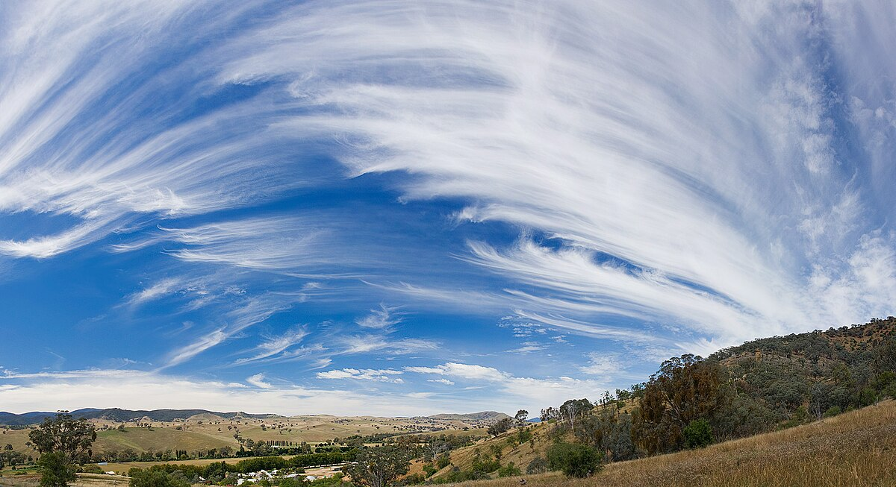
Cirrostratus (Cs) — Selimut tipis menutupi langit, sering menimbulkan halo; menandai sistem cuaca basah mendekat.
Cirrocumulus (Cc) — Butiran kecil teratur seperti sisik ikan (mackerel sky), terdiri dari kristal es; indikasi ketidakstabilan bisa tumbuh jadi badai.
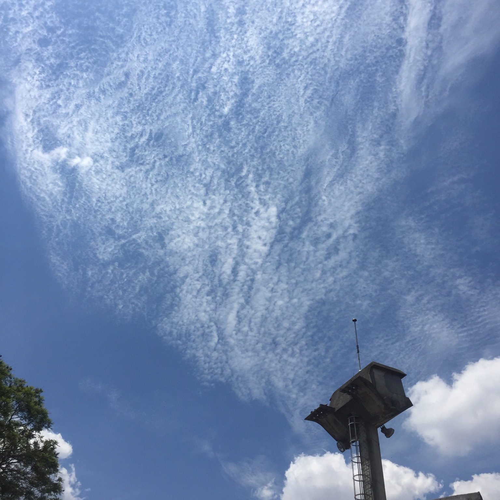
Awan Menengah (2–6 km)
Altostratus (As) — Lapisan abu-abu merata yang menutupi matahari menjadi samar; membawa hujan ringan–sedang dan berlangsung lama.
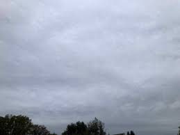
Altocumulus (Ac) — Gumpalan putih/abu dengan bayangan, berkelompok; tanda atmosfer transisi, potensi hujan/badai sore jika muncul pagi hari.
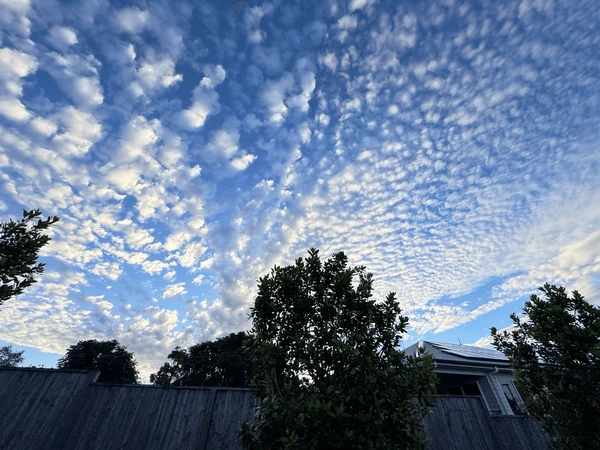
Awan Rendah (≤ 2 km)
Stratus (St) — Seperti kabut menggantung; gerimis halus, menandakan cuaca stabil tetapi lembab.
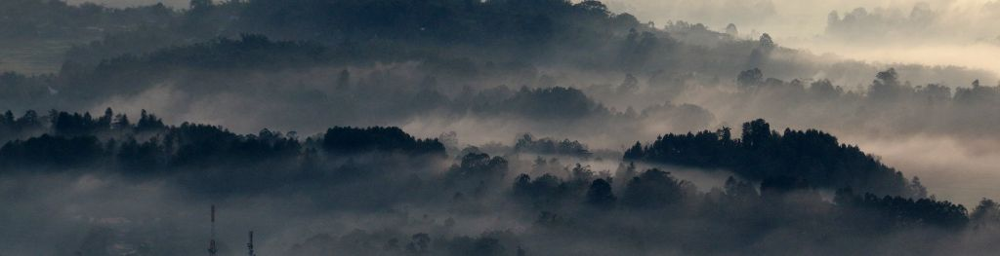
Stratocumulus (Sc) — Gumpalan besar seperti roti sobek, jarang hujan (paling gerimis); muncul saat pergantian massa udara.
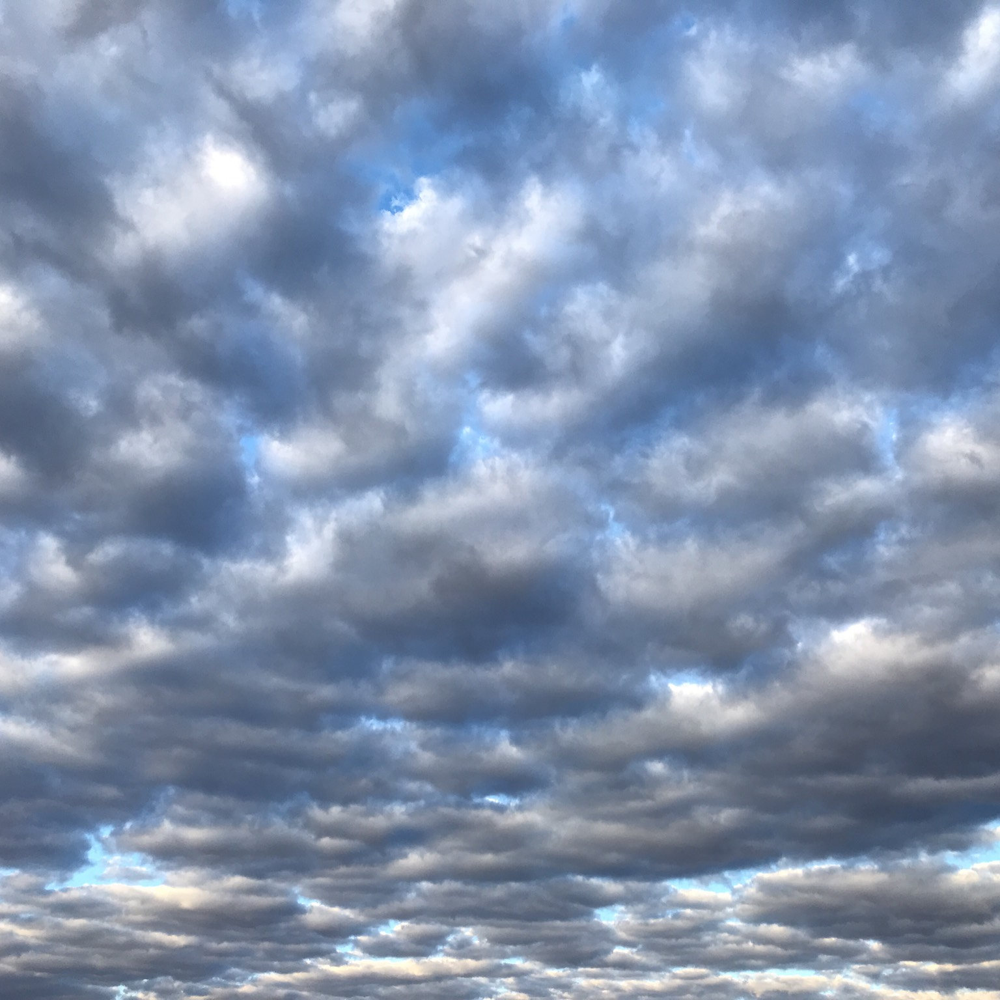
Nimbostratus (Ns) — Awan hujan gelap menutupi langit luas, menghasilkan hujan kontinu intensitas ringan–sedang tanpa petir.
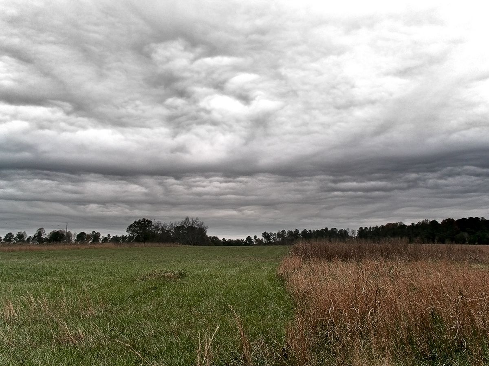
Awan Bertingkat Vertikal
Cumulus (Cu) — Gumpalan kapas dengan dasar datar; cuaca cerah/stabil, bisa tumbuh vertikal jadi Cb.
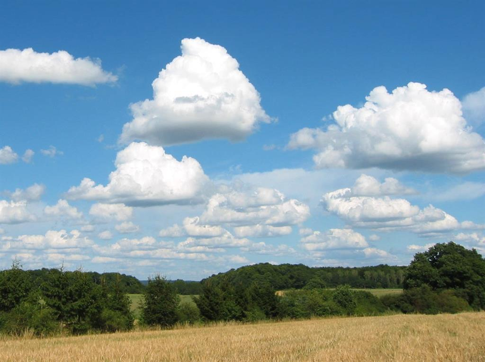
Cumulonimbus (Cb) — Awan badai raksasa hingga stratosfer dengan puncak anvil; membawa hujan deras, petir, angin kencang, hujan es.
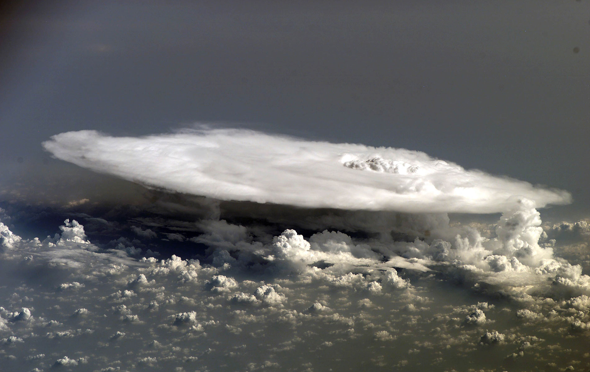
Awan sebagai Indikator Perubahan Cuaca
| Jenis Awan | Pertanda Cuaca |
|---|---|
| Cirrostratus | Hujan akan datang dalam 6–12 jam |
| Altocumulus pagi | Potensi hujan badai sore |
| Cumulus tumbuh cepat | Atmosfer labil, peluang badai |
| Nimbostratus | Hujan lama, intensitas sedang |
| Cumulonimbus | Hujan ekstrem, kilat, angin kencang |
Awan Langka (Fun Fact)
Awan Lentikular — Bentuk lensa/UFO di pegunungan; terbentuk karena angin dipaksa naik oleh topografi, tampak diam meski angin kencang.
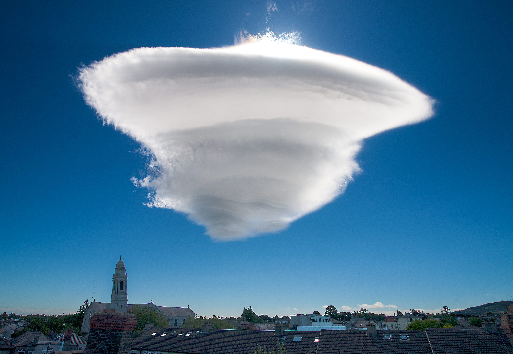
Awan Mammatus — Deretan gumpalan bulat menggantung di dasar awan (sering Cb); tanda ketidakstabilan di bawah awan.
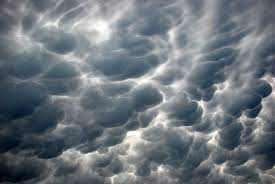
Awan Kelvin–Helmholtz — Bergelombang seperti ombak akibat wind shear kuat; sangat jarang, cepat “pecah”.
Mulai Kuis
Uji kemampuan membaca awan: soal acak, ada animasi & suara umpan balik.